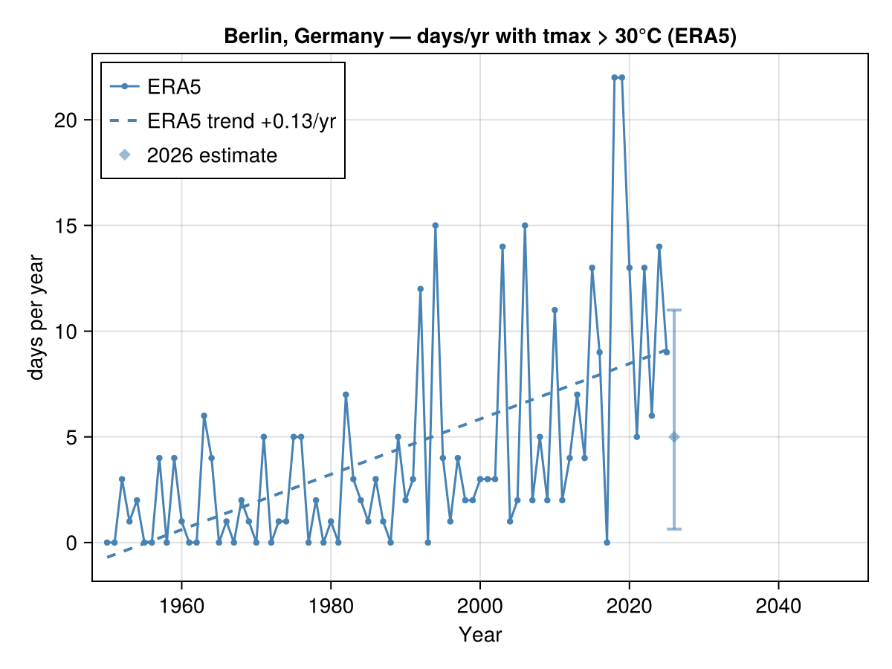

Current-year nowcast
ERA5 lags real time by about a week, so the current calendar year is always incomplete. An index computed on it is misleading: a hot-day count or a precipitation total is only a lower bound (the summer may not have happened yet), and an annual mean is biased toward whichever season has elapsed.
Rather than plot that partial value, ClimStats completes the year from weighted analog years and shows a statistical estimate with an uncertainty band — a lighter diamond with a lo–hi error bar, distinct from the solid observed history.
The two figures
The script examples/berlin_nowcast.jl renders both figures below. Run it from the package root with a Makie backend and internet access:
julia --project=docs examples/berlin_nowcast.jlHistory + current-year estimate
climate_timeseries drops the trailing partial year from the solid ERA5 line and overlays the nowcast estimate. The x-axis is fixed to 1950–2050 so it lines up with the projection figure.
using ClimStats, CairoMakie, Dates
fig = climate_timeseries("Berlin, Germany"; threshold = 30,
start = Date(1950, 1, 1)) # nowcast = true by default
History + estimate + CMIP6 projection
The same estimate appears on the combined past+future figure: ERA5 history, the 2026 nowcast, and a bias-corrected CMIP6 ensemble (median line + shaded spread) out to 2050.
fig = climate_projection("Berlin, Germany"; threshold = 30,
hist_start = Date(1950, 1, 1),
proj_stop = Date(2050, 12, 31))Run examples/berlin_nowcast.jl to render this combined past+future figure (it needs live Open-Meteo access for the CMIP6 ensemble, so it is not embedded here).
Pass nowcast = false to either helper to fall back to the raw partial value.
How the estimate is built
Analog resampling, in src/nowcast.jl:
- Similarity — compare the current year's observed window (Jan 1 → last available day) against the same calendar window of every complete prior year, by RMSE of the daily similarity variable. Closer years are better analogs.
- Weights — turn those distances into weights with a Gaussian kernel, optionally keeping only the top-K analogs.
- Anchored trajectories — for each analog year, take its remaining days as a candidate trajectory for the rest of this year, shifted so its window mean matches the current year's (additive for temperatures, multiplicative for precipitation). This tracks how the year is actually running and preserves the day-to-day structure within an analog.
- Index distribution — each anchored analog yields a completed daily series; running an index over the weighted members gives the median and lo–hi band that are plotted.
The uncertainty therefore lives at the index level (derived from the ensemble), while daily provenance lives in the data: each completed member carries a Boolean :estimated column (false for observed days, true for analog-filled days), so the synthetic tail never silently mixes with observations.
Calling the estimator directly
data = era5_daily("Berlin, Germany"; start = Date(1950, 1, 1))
est = estimate_current_year(data, d -> days_above(d, 30; var = :tmax); var = :tmax)
# CurrentYearEstimate(2026: 5 [1–11], 165/365 days, 20 analogs) (illustrative)
est.median, est.lo, est.hi # the estimate and its band
est.observed_partial # the (lower-bound) count from observed days only
members = complete_current_year(data; var = :tmax) # the completed daily series
members[1].table.estimated # false for observed, true for filledAPI
ClimStats.estimate_current_year — Function
estimate_current_year(data, indexfn; var, valuecol, lo = 0.1, hi = 0.9, kwargs...) -> CurrentYearEstimateEstimate an annual index for the trailing, incomplete year of data by running indexfn (a ClimateData -> DataFrame index, e.g. d -> days_above(d, 30)) over the weighted analog completions from complete_current_year and summarising the result as a weighted median with a lo–hi band.
var selects the variable the analog similarity keys on (default the index's own variable when called from the high-level helpers); valuecol the index column to summarise (auto-detected by default). Extra kwargs (n_analogs, bandwidth, min_obs, maxscale) are forwarded to the analog builder. Returns a CurrentYearEstimate.
ClimStats.complete_current_year — Function
complete_current_year(data; var, n_analogs = 20, bandwidth, min_obs, maxscale) -> Vector{ClimateData}Build the ensemble of completed daily series for the trailing, incomplete year of data: one ClimateData per weighted analog year, each the observed history plus the year's remaining days filled from that analog and anchored to how the current year is running. Every member carries a Boolean :estimated column (false for observed days, true for filled days).
var (default mean temperature if present) drives the analog similarity; see the module notes for the method. Errors if the final year is already complete.
ClimStats.CurrentYearEstimate — Type
CurrentYearEstimateStatistical estimate of an annual index for the trailing, incomplete year, produced by estimate_current_year from weighted analog completions.
Fields
year: the incomplete calendar year.n_obs/n_total: observed days so far / days in the full year.observed_partial: the index computed on the observed days only (for counts and sums this is a lower bound; shown for reference, not plotted).median,lo,hi: weighted median and lo–hi quantiles of the index across the completed analog members — the estimate and its uncertainty band.members: per-analog(; year, value, weight)— the full weighted distribution behind the summary.
ClimStats.incomplete_final_year — Function
incomplete_final_year(data) -> Union{Int,Nothing}The last calendar year of data if it does not reach 31 December (and so is a partial year worth nowcasting), or nothing if the final year is complete.
ClimStats.plot_nowcast! — Function
plot_nowcast!(target, est; color = 1, label, markersize = 9, kwargs...) -> targetOverlay a CurrentYearEstimate for the incomplete final year onto target (an Axis or Figure): a lighter-shade diamond marker at the weighted median with a vertical lo–hi error bar, so it reads as an estimate distinct from the solid observed history. Returns target.